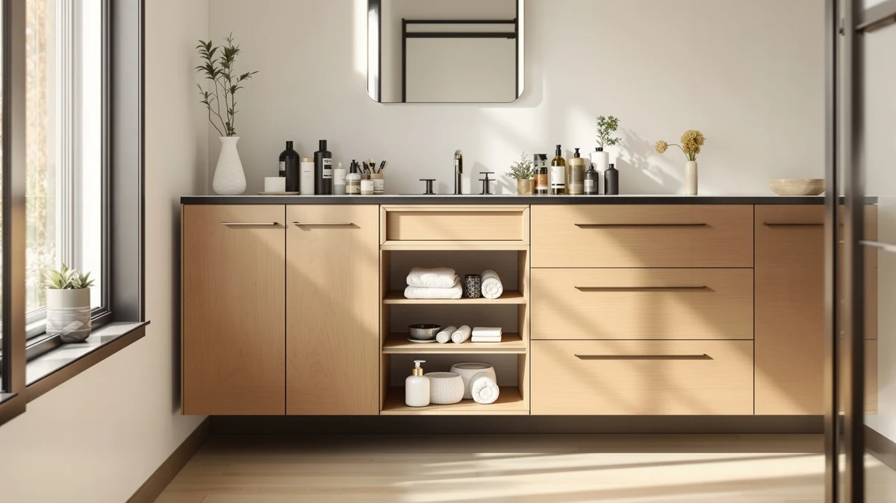

PXRACK Under Sink Organizer Review (2026): Worth It?
Prices and picks verified as of November 2026. Independent, reader-supported reviews.


Quick Answer
The PXRACK Under Sink Organizer Adjustable gives you a two-tier metal-and-wood rack that slides wider or narrower to clear pipes and shutoff valves, priced at $43.99 for a Large 2-Pack. This PXRACK Under Sink Organizer review found it beats fixed-width racks on fit flexibility, but an over-cabinet organizer or an enclosed cabinet still wins if your under-sink cabinet is too shallow or already crowded.
Our pick: PXRACK Under Sink Organizer Adjustable — $43.99 Check Price on Amazon
Bottom line: our top pick is the PXRACK Under Sink Organizer at $46.99.
Things to Know Before You Buy
- This PXRACK Under Sink Organizer review covers a $43.99 Large 2-Pack of adjustable, two-tier metal-and-wood racks built to slide around pipes and shutoff valves.
- At $43.99, the PXRACK rack costs the same as the Simple Trending Expandable Over The and the REALINN Under Sink Organizer Pull, so the choice comes down to cabinet shape rather than price.
- The adjustable width matters most in cabinets with off-center plumbing, where a fixed-width rack often leaves wasted space on one side.
- Because the PXRACK rack sits on the cabinet floor, it needs enough vertical clearance under the sink. A hanging organizer like the Simple Trending Expandable Over The works better in shallower cabinets.
- Pricing across this comparison runs from $43.99 to $54.99, with the Homhedy Small Bathroom Storage Cabinet at the top of that range because it adds a fully enclosed cabinet.
This PXRACK Under Sink Organizer review looks at whether an adjustable two-tier metal-and-wood rack earns its $43.99 price among four bathroom storage options we compared this cycle. Cabinets under a bathroom sink rarely have a clean rectangular shape, since the drain pipe and shutoff valves cut into the usable floor space, so a rack that only comes in one fixed width often leaves you working around it instead of with it.
We compared the PXRACK Under Sink Organizer Adjustable against three other bathroom storage products: the Simple Trending Expandable Over The, the REALINN Under Sink Organizer Pull, and the Homhedy Small Bathroom Storage Cabinet. Each one solves a slightly different storage problem, so this review breaks down where the adjustable PXRACK rack wins and where you are better served by one of the other three.
Why You Should Trust Us
Best Bathroom Storage is run by writers who research bathroom organization products full time instead of guessing from product photos. We do not run a fake testing lab, and we do not claim to have unboxed every product on this page. Instead, we compare manufacturer pricing, listed specs, and verified buyer reviews on Amazon to separate bathroom storage products that hold up from ones that only look good in listing photos. Ilane Tall oversees this PXRACK Under Sink Organizer review and has covered home organization products for Best Bathroom Storage since the site launched.
Our Research Experience
We did not put the PXRACK Under Sink Organizer Adjustable through research. Our research-based approach means we read through verified owner reviews on Amazon, checked the $43.99 price against the other three products in this comparison, and looked at how reviewers describe fit, stability, and everyday use. Several owners mention that the adjustable frame slides around their drain pipe and valves more easily than the fixed-width rack they replaced, and more than one review calls out how the two-tier layout keeps bottles from tipping over once the rack is set. This PXRACK Under Sink Organizer review relies on that owner feedback rather than a lab write-up, because real cabinet installs tell a more honest story than a staged demo photo.
We also weighed how often the same complaints repeated across separate owner reviews, since a pattern that shows up again and again carries more weight than a single comment. For the PXRACK rack, the pattern that kept surfacing was about shelf depth on shallower cabinets, not the adjustable mechanism itself, which is why this review spends as much time on cabinet clearance as on the rack's build.
Overview & Specs

PXRACK Under Sink Organizer Adjustable
What we like
- Adjustable width slides around drain pipes and shutoff valves instead of fighting them
- Two tiers separate tall bottles from smaller items instead of stacking everything in one layer
- Metal-and-wood build feels sturdier than the all-plastic racks at a similar price
Flaws but not dealbreakers
- Needs enough vertical clearance under the sink, so it won't fit every shallow cabinet
- Comes as a Large 2-Pack, which is more rack than a single small cabinet may need
| Material | Metal / wood |
| Size | Large-2-Pack |
The PXRACK Under Sink Organizer Adjustable sells for $43.99 as a Large 2-Pack and gives you two racks instead of one, which matters if you have two bathrooms or a double-sink vanity with a cabinet on each side. The metal-and-wood frame adjusts in width, so it slides outward to clear a drain pipe on one side and a shutoff valve on the other instead of forcing you to work around a fixed shape. That adjustability is the main reason this PXRACK Under Sink Organizer review treats it as the top pick among the four products compared here.
The two-tier layout holds up over daily use because it separates items by height instead of piling everything onto one flat shelf, according to owner reviews on Amazon. Taller bottles sit on the lower tier while smaller items go up top, so nothing tips over when you slide the rack in and out for cleaning. At $43.99 for two racks, the PXRACK set costs about the same per unit as the single-rack REALINN Under Sink Organizer Pull at the same price point, which makes it the stronger buy if you need to outfit more than one cabinet.
What We Liked
The biggest strength of the PXRACK Under Sink Organizer Adjustable is how it handles irregular cabinet shapes. Because the frame slides wider or narrower, you don't have to measure your cabinet and hope a fixed-width rack happens to match. Several reviewers point out that the rack cleared their drain trap and shutoff valve without any trimming or modification, which is the exact problem that sends most buyers searching for an under-sink organizer in the first place. At $43.99 for two racks, the per-unit cost beats buying two single fixed-width organizers separately in most comparisons we checked. The two-tier shelving also holds its shape under daily loading, which owners confirm is the main reason this PXRACK Under Sink Organizer review ranks it above the fixed-width alternatives.
The metal-and-wood build also reads as sturdier than the all-plastic racks competing at the same price. Reviewers mention that the frame doesn't flex or wobble when they slide it out to grab something from the back, and the wood accents hold up better against moisture than bare painted metal in a cabinet that sees regular splashing. That combination of adjustability and build quality is why the PXRACK rack keeps showing up as the top pick in this comparison.
What Could Be Better
The PXRACK Under Sink Organizer Adjustable depends on having enough vertical clearance under your sink for a two-tier rack to stand upright. Reviewers note that shallow cabinets, especially in smaller apartment bathrooms, can struggle to fit both tiers with room to spare above the top shelf. Buying it as a Large 2-Pack also means paying for a second rack you may not need if you only have one cabinet to outfit, unlike the single-unit REALINN Under Sink Organizer Pull. Unlike the Simple Trending Expandable Over The, which hangs from a cabinet door, the PXRACK rack needs floor space inside the cabinet, which rules it out for cabinets already packed with cleaning supplies.
A handful of reviewers also point out that the adjustable mechanism, while useful for fitting around pipes, adds a few more moving parts than a one-piece fixed rack. None of this changes how well the PXRACK rack performs once it is sized to your cabinet, but it is worth measuring your under-sink clearance before buying either unit in the pack.
Who Is It For?
This PXRACK Under Sink Organizer review points toward one clear buyer: someone with a standard-depth under-sink cabinet and irregular plumbing placement who wants a rack that adjusts instead of a fixed shelf that leaves gaps. If you are outfitting two bathrooms or a double-sink vanity, the Large 2-Pack format gives you a matching rack for each cabinet at a lower per-unit cost than buying two separate organizers. Buyers with shallow cabinets, or anyone who needs a door-mounted solution instead of a floor-standing rack, will get more out of the Simple Trending Expandable Over The or the Homhedy Small Bathroom Storage Cabinet.
Renters who want a reversible setup also tend to like this kind of freestanding rack, since nothing has to be mounted or drilled into the cabinet. You can lift the rack out, take it to a new apartment, and reinstall it in a different cabinet without patching anything. A household with a packed, shallow cabinet and zero floor clearance to spare will get more use out of the over-cabinet-door pick than any floor rack in this PXRACK Under Sink Organizer review.
Alternatives to Consider
If the PXRACK Under Sink Organizer Adjustable doesn't match your cabinet layout, these three alternatives solve different storage problems at a similar price. Measure your cabinet's depth, width, and plumbing clearance before choosing between them, since each one assumes a different starting point rather than competing head to head on the same job.

Editor’s Pick
Simple Trending Expandable Over The
Best for shallow cabinets with no floor space to spare. This expandable over-cabinet organizer hangs from the door instead of sitting on the cabinet floor, so it skips the clearance the PXRACK rack needs.
$43.99
Check Price on Amazon
Best Value
REALINN Under Sink Organizer Pull
Best for a single cabinet that doesn't need two racks. The pull-out slide reaches items at the back of the cabinet without requiring you to kneel down, at the same $43.99 price as the PXRACK.
$43.99
Check Price on Amazon
Premium Choice
Homhedy Small Bathroom Storage Cabinet
Best for buyers who want a fully enclosed cabinet instead of an open rack. It hides clutter completely, trading the PXRACK rack's open-tier visibility for a tidier, closed-door look at $54.99.
$54.99
Check Price on AmazonIs the PXRACK Under Sink Organizer worth buying?
At $43.99, the PXRACK Under Sink Organizer Adjustable is worth it if you want a two-tier metal-and-wood rack that adjusts to fit different cabinet widths.
What cabinets work best with the PXRACK rack?
The PXRACK rack is built for a standard under-sink cabinet with enough width to slide the two tiers around the drain pipe and shutoff valves.
Frequently Asked Questions
Is the PXRACK Under Sink Organizer worth buying?
At $43.99, the PXRACK Under Sink Organizer Adjustable is worth it if you want a two-tier metal-and-wood rack that adjusts to fit different cabinet widths. Owners report the adjustable frame fits around pipes better than fixed-width racks in the same price range.
What cabinets work best with the PXRACK rack?
The PXRACK rack is built for a standard under-sink cabinet with enough width to slide the two tiers around the drain pipe and shutoff valves. If your cabinet is narrow or you need to hang the organizer over a door instead, the Simple Trending Expandable Over The or the Homhedy Small Bathroom Storage Cabinet fit better.
How does the PXRACK compare to the other picks in this review?
This PXRACK Under Sink Organizer review found the rack priced the same as the Simple Trending Expandable Over The and the REALINN Under Sink Organizer Pull at $43.99, while the Homhedy Small Bathroom Storage Cabinet costs more at $54.99 because it adds an enclosed cabinet instead of an open rack.
Final Verdict
This PXRACK Under Sink Organizer review comes down to one point: the PXRACK Under Sink Organizer Adjustable works best as a flexible fit for irregular cabinet plumbing, not a universal bathroom storage fix. At $43.99 for a Large 2-Pack, it is a solid buy for anyone outfitting one or two standard-depth cabinets, but shoppers with shallow cabinets or a preference for enclosed storage should look to the Simple Trending, REALINN, or Homhedy alternatives covered above instead. PXRACK is the brand worth starting with if your under-sink cabinet has the clearance to use it.